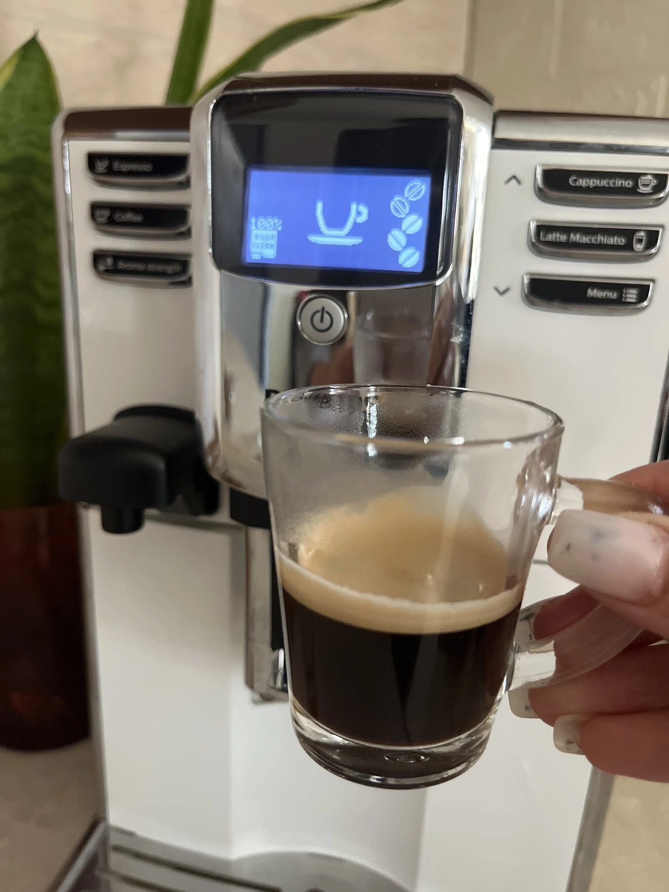
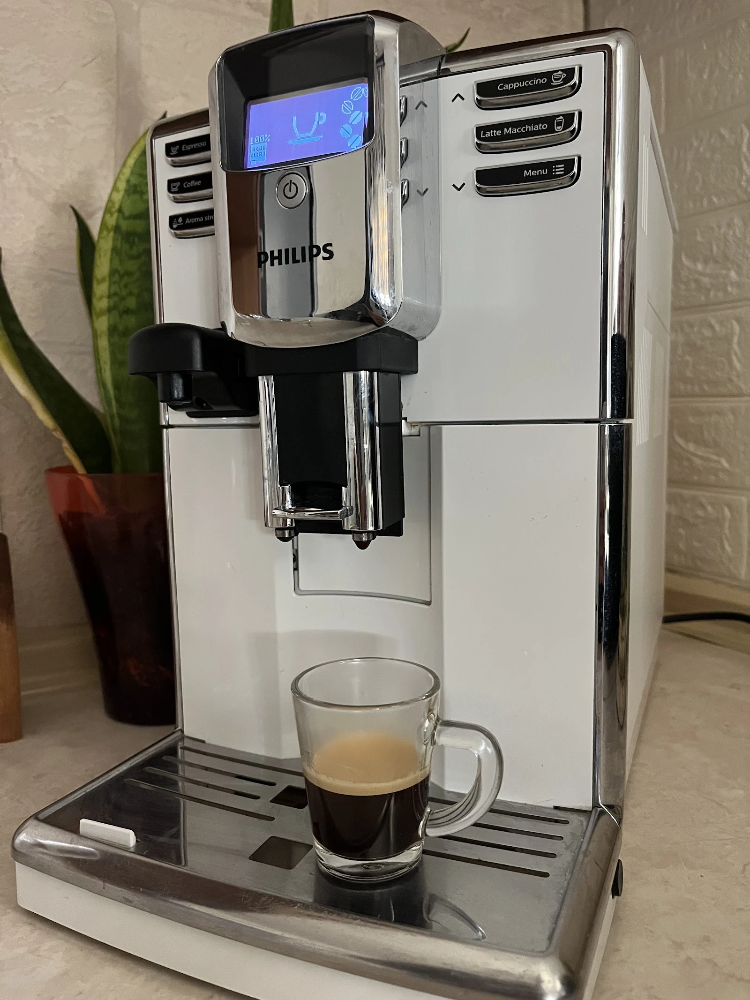
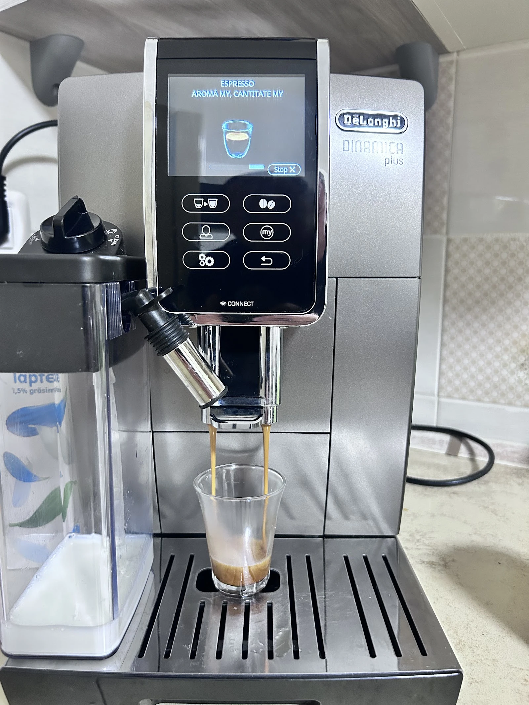
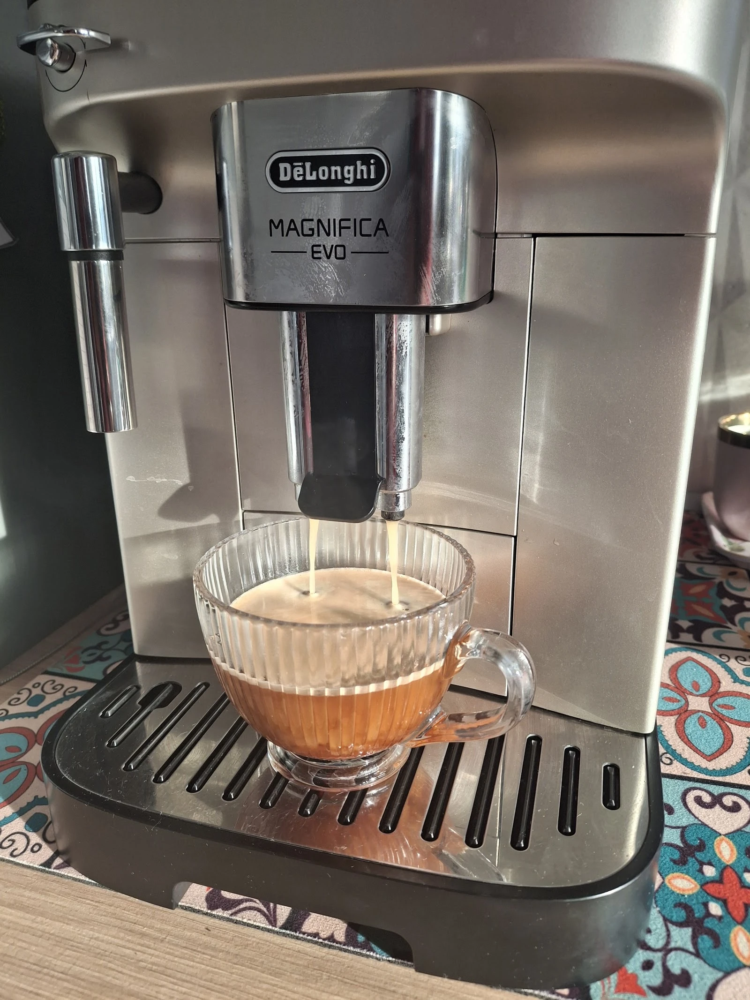
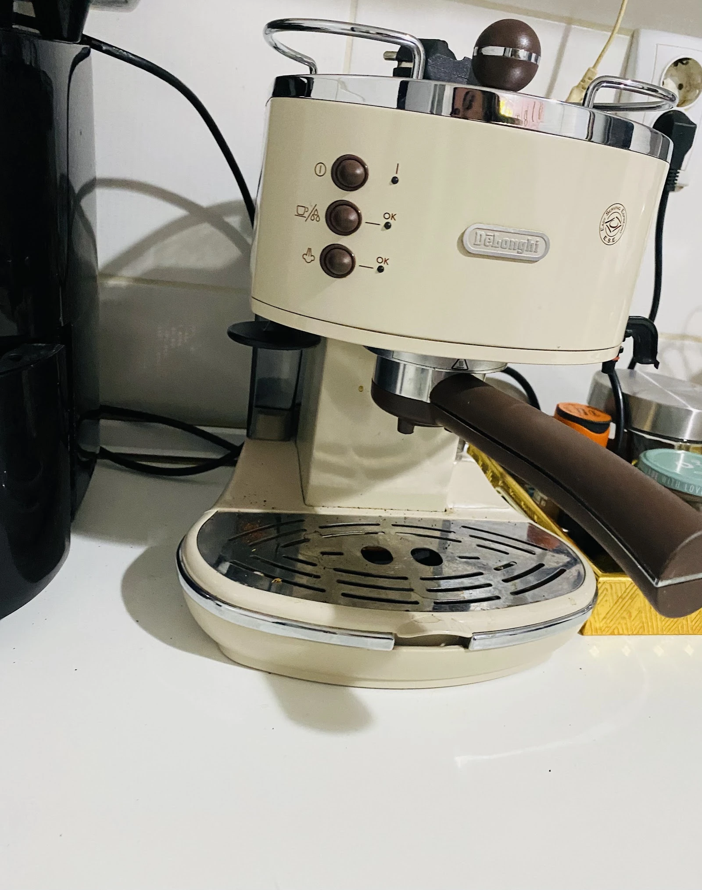
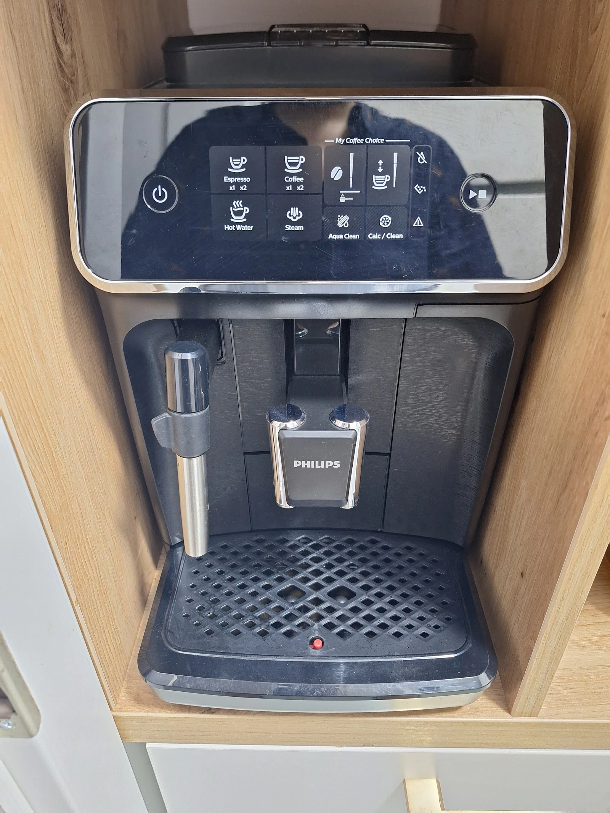
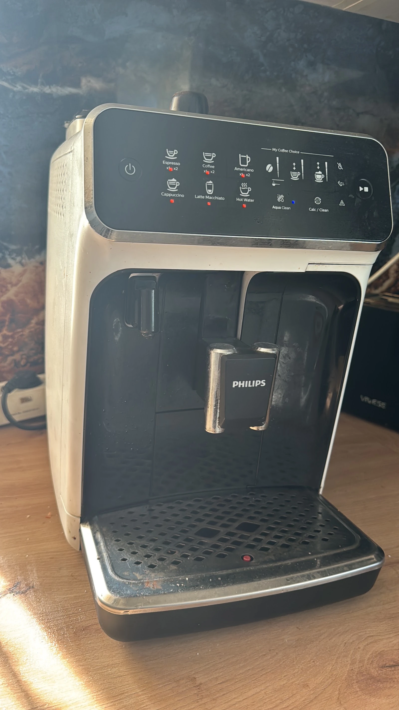
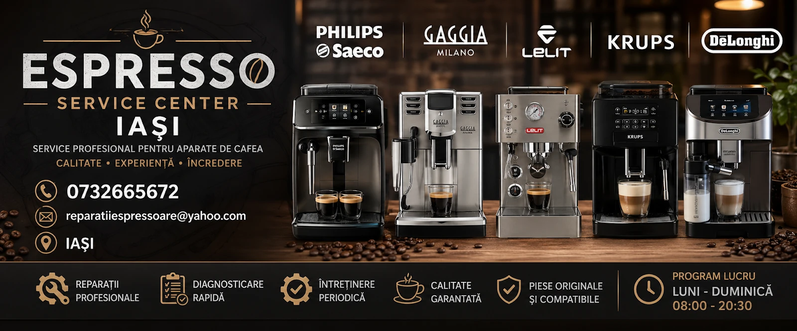

{{Reparații|Repairs|Reparações}}
{{Aparatul nu mai face cafea, curge sau face zgomot: se repară.|The machine stopped making coffee, leaks or rattles: it gets fixed.|A máquina deixou de fazer café, perde água ou faz barulho: repara-se.}}
{{Iași · reparații aparate de cafea|Iași · coffee machine repair|Iași · reparação de máquinas de café}}
{{Espresso Service Center repară, diagnostichează și întreține aparate de cafea în Iași: Philips Saeco, Gaggia, Lelit, Krups, De'Longhi.|Espresso Service Center repairs, diagnoses and services coffee machines in Iași: Philips Saeco, Gaggia, Lelit, Krups, De'Longhi.|O Espresso Service Center repara, diagnostica e faz manutenção de máquinas de café em Iași: Philips Saeco, Gaggia, Lelit, Krups, De'Longhi.}}

{{Aparate|Machines|Máquinas}}
{{Mărcile de pe afișul service-ului: Philips Saeco, Gaggia Milano, Lelit, Krups, De'Longhi. Aici, câteva dintre aparatele din fotografiile service-ului.|The brands on the service's own poster: Philips Saeco, Gaggia Milano, Lelit, Krups, De'Longhi. Here, a few of the machines from the service's photos.|As marcas do cartaz do serviço: Philips Saeco, Gaggia Milano, Lelit, Krups, De'Longhi. Aqui, algumas das máquinas das fotografias do serviço.}}







{{Servicii|Services|Serviços}}
{{Aparatul nu mai face cafea, curge sau face zgomot: se repară.|The machine stopped making coffee, leaks or rattles: it gets fixed.|A máquina deixou de fazer café, perde água ou faz barulho: repara-se.}}
{{Mai întâi aflăm ce are, apoi decizi ce faci cu el.|First we find out what it has, then you decide what to do.|Primeiro descobre-se o que tem, depois decides o que fazer.}}
{{Curățare și verificare înainte să apară defecțiunea.|Cleaning and checks before a fault appears.|Limpeza e verificação antes de surgir a avaria.}}
{{Calcarul din Iași se simte în gust și în presiune.|Limescale shows in the taste and in the pressure.|O calcário nota-se no sabor e na pressão.}}
{{Cere reparația|Request a repair|Pedir reparação}}
{{Completezi marca și avaria; mesajul pleacă gata scris pe WhatsApp sau SMS. Dacă preferi, sună direct.|Fill in the brand and the fault; the message goes out ready-written on WhatsApp or SMS. Or just call.|Preenches a marca e a avaria; a mensagem segue pronta por WhatsApp ou SMS. Ou liga diretamente.}}
{{Sună: 0732 665 672|Call: 0732 665 672|Ligar: 0732 665 672}}
{{Recenzii pe Google|Google reviews|Avaliações no Google}}
{{Rezumat al sensului recenziilor publice, nu citate.|A summary of the sense of public reviews, not quotes.|Resumo do sentido das avaliações públicas, não citações.}}
{{Serios, amabil și priceput; problema aparatului a fost rezolvată.|Serious, kind and skilled; the machine's problem was solved.|Sério, simpático e competente; o problema da máquina ficou resolvido.}}Ștefania B. · Google
{{Reparația a ieșit rapid și profesionist, cu comunicare bună pe tot parcursul.|The repair was quick and professional, with good communication throughout.|A reparação foi rápida e profissional, com boa comunicação do princípio ao fim.}}Mălina S. · Google
{{Recomandat fără rezerve de cei care au adus aparatul la reparat.|Recommended without reservation by those who brought their machine in.|Recomendado sem reservas por quem levou a máquina a reparar.}}Mircea S. · Google
Contact